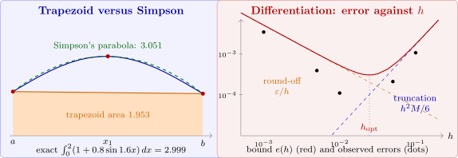

8.3 Composite numerical integration
High-order Newton–Cotes formulas on a single interval are unreliable (their weights become negative and large, and the interpolating polynomials suffer from Runge’s phenomenon). Instead, the interval is divided into many small subintervals, and a low-order rule is used on each.
Theorem 8.3.1 (Composite trapezoidal and Simpson’s rules). Let \(h = \frac {b-a}{n}\) and \(x_j = a+jh\).
- (a)
- If \(f\in C^2[a,b]\), \[\int _a^bf(x)\,dx = \frac h2\left [f(a)+2\sum _{j=1}^{n-1}f(x_j)+f(b)\right ]-\frac {b-a}{12}h^2f''(\mu )\] for some \(\mu \in (a,b)\).
- (b)
- If \(f\in C^4[a,b]\) and \(n\) is even, \[\int _a^bf(x)\,dx = \frac h3\left [f(a)+4\sum _{j=1}^{n/2}f(x_{2j-1})+2\sum _{j=1}^{n/2-1}f(x_{2j})+f(b)\right ]-\frac {b-a}{180}h^4f^{(4)}(\mu ).\]
Proof. (b) Apply Simpson’s rule to each of the \(\frac n2\) intervals \([x_{2j-2},x_{2j}]\) and add. The total error is \(-\frac {h^5}{90}\sum _{j=1}^{n/2}f^{(4)}(\xi _j)\). The average \(\frac {2}{n}\sum f^{(4)}(\xi _j)\) lies between the minimum and maximum of \(f^{(4)}\), so by the Intermediate Value Theorem it equals \(f^{(4)}(\mu )\) for some \(\mu \), and the error is \(-\frac {h^5}{90}\cdot \frac n2f^{(4)}(\mu ) = -\frac {b-a}{180}h^4f^{(4)}(\mu )\), since \(nh = b-a\). Part (a) is proved in the same way from Theorem 8.2.1. □
Example 8.3.2. Determine values of \(h\) that guarantee an error less than \(2\times 10^{-5}\) for \(\int _0^\pi \sin x\,dx = 2\) by the composite trapezoidal rule and by the composite Simpson’s rule, and compare the actual errors.
Solution. Since \(|f''|,|f^{(4)}|\leq 1\), the trapezoidal rule needs \(\frac {\pi h^2}{12}<2\times 10^{-5}\), that is \(h<8.74\times 10^{-3}\), or \(n = \frac \pi h\geq 360\). Simpson’s rule needs \(\frac {\pi h^4}{180}<2\times 10^{-5}\), that is \(h<0.1849\), or \(n\geq 18\) (even). The actual results:
| \(n\) | trapezoidal | error | Simpson | error |
| \(4\) | \(1.8961189\) | \(1.0\times 10^{-1}\) | \(2.0045598\) | \(4.6\times 10^{-3}\) |
| \(8\) | \(1.9742316\) | \(2.6\times 10^{-2}\) | \(2.0002692\) | \(2.7\times 10^{-4}\) |
| \(16\) | \(1.9935703\) | \(6.4\times 10^{-3}\) | \(2.0000166\) | \(1.7\times 10^{-5}\) |
| \(18\) | \(1.9949205\) | \(5.1\times 10^{-3}\) | \(2.0000103\) | \(1.0\times 10^{-5}\) |
Doubling \(n\) divides the trapezoidal error by \(4\) and the Simpson error by \(16\), as \(O(h^2)\) and \(O(h^4)\) predict. For a function as smooth as this, the higher-order rule is enormously more efficient: \(18\) function values against \(361\).
Note. Composite rules are stable with respect to round-off. If each \(f(x_j)\) carries an error at most \(\varepsilon \), the error in the composite Simpson sum is at most \(\frac h3\varepsilon \left (1+4\cdot \frac n2+2(\frac n2-1)+1\right ) = nh\varepsilon = (b-a)\varepsilon \), independent of \(h\). Unlike numerical differentiation, integration does not amplify round-off as \(h\) shrinks.

Questions on this section
Stuck on something here? Ask below and it stays attached to this topic.